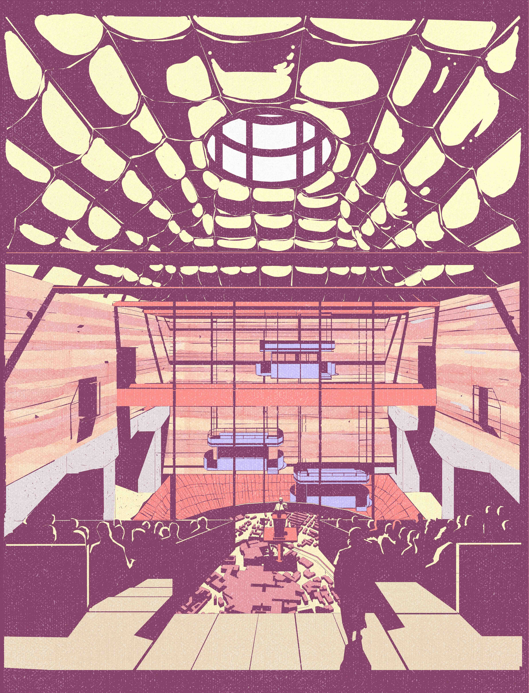
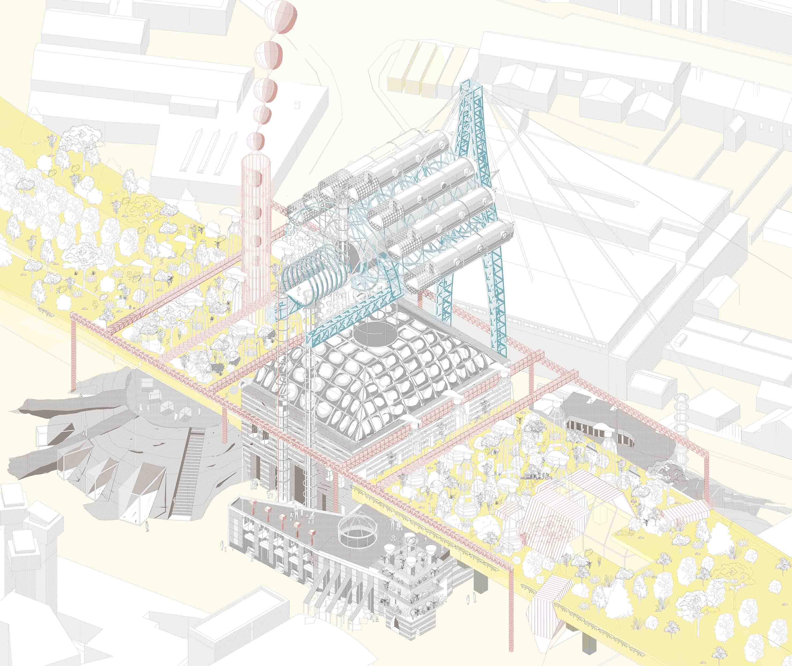
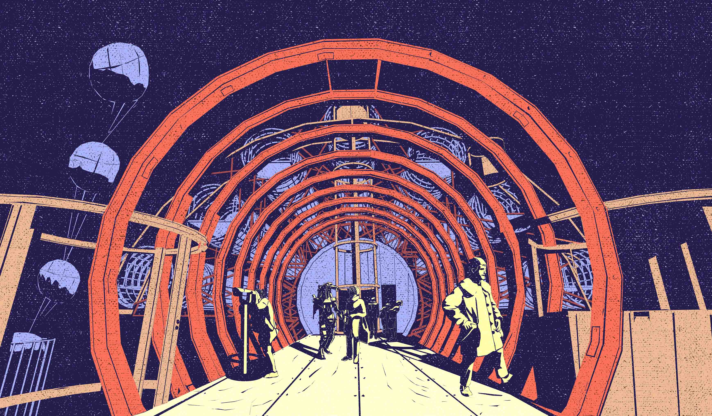
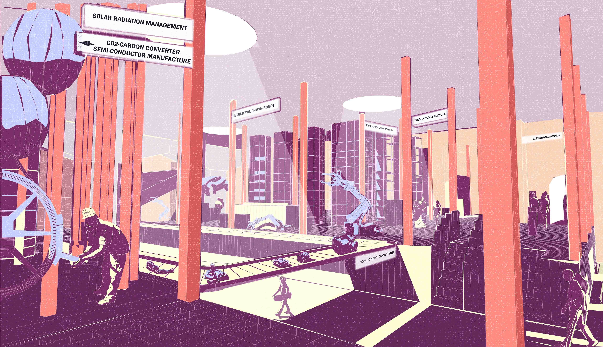
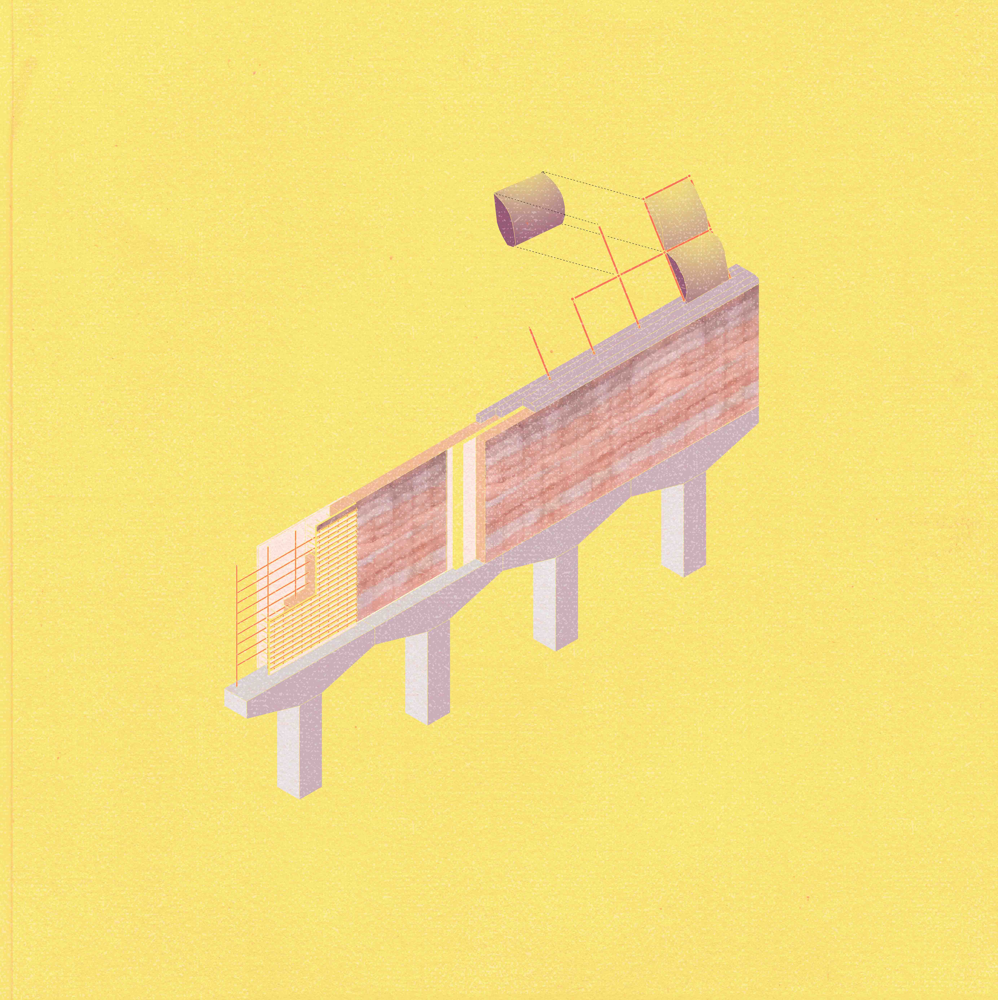
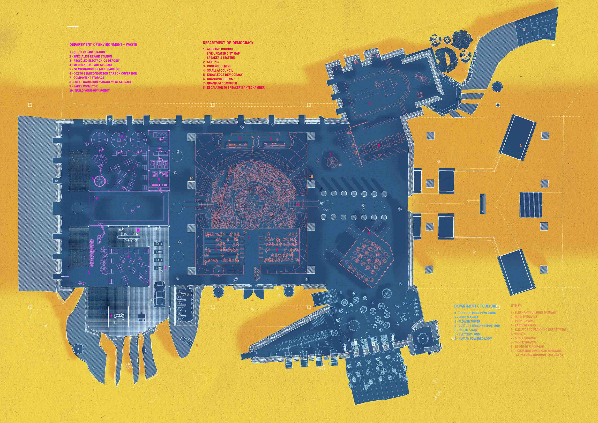

01_The AI Bureau
Is your city marred by stagnant Modernism? With the cybernetic revolution and increasing urbanisation, the cityscape is rapidly changing. The city is on the precipice of opportunity and change. Coventry, struggling in its post-industrial slumber is the first to fully embrace the new city – the AI integrated city. Exploring the new realm of ring road architecture, a site on the East side of the inner city ringroad – now pedestrianised – will be the location for the world’s first AI Bureau.

The Hall of democracy




